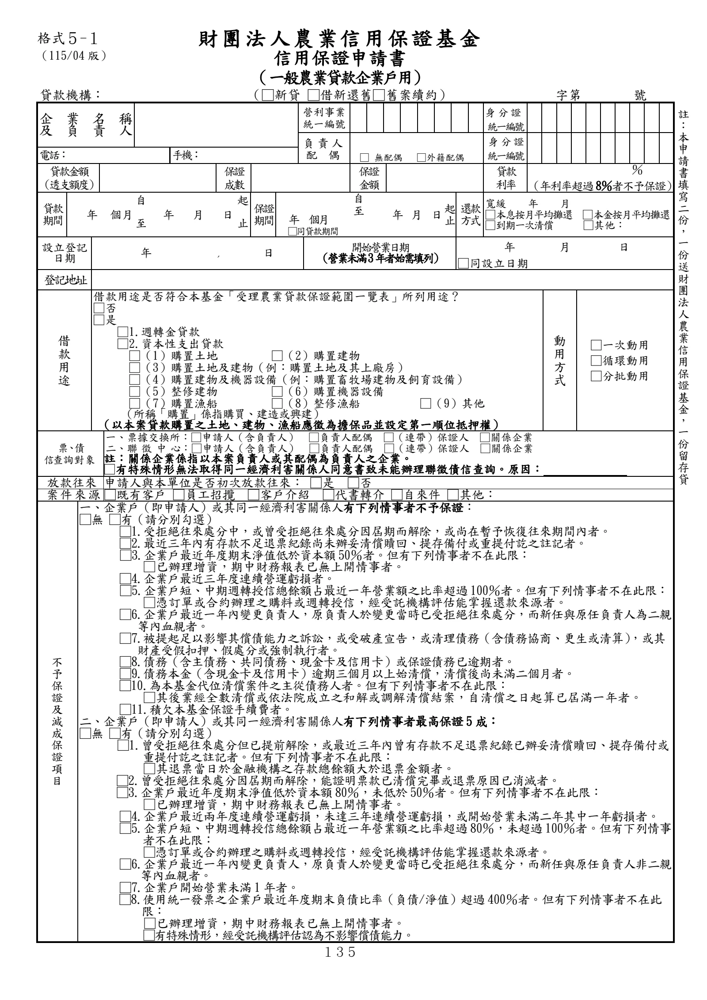
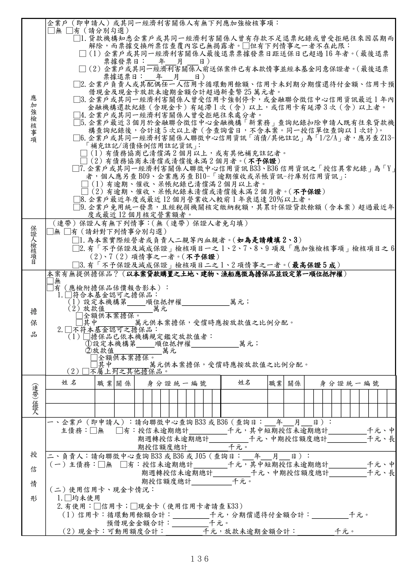
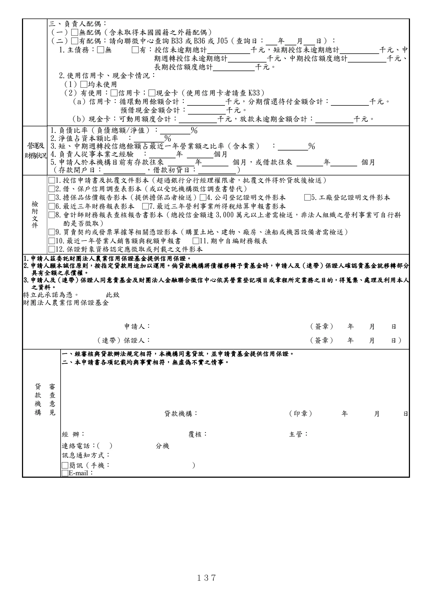

格式 5-1：信用保證申請書（一般農業貸款企業戶用）
正式書表版面請以原始PDF為準
下列擷取文字僅供搜尋與輔助查閱，未重新設計為線上表單。
手冊頁：135 PDF頁：147／203

查看PDF文字層
下列文字取自PDF既有文字層，僅供搜尋、複製與無障礙輔助。複雜表格的欄列位置可能失真，正式內容請以原頁預覽或PDF為準。
財團法 人農業信用保證基金
信用保證申請書
（一般農業貸款企業戶用）
貸款機構： （□新貸 □借新還舊□舊案續約） 字第 號
企業名稱
及負責人
營利事業
統一編號
身 分 證
統一編號
負責人
配 偶
□ 無配偶 □外籍配偶
身 分 證
統一編號
電話： 手機：
貸款金額
（透支額度）
保證
成數
保證
金額
貸款
利率
％
（年利率超過8％者不予保證）
貸款
期間 年 個月
自
年 月 日
起 保證
期間 年 個月
自
至 年 月 日 起
止
還款
方式
寬緩 年 月
□本息按月平均攤還 □本金按月平均攤還
□到期一次清償 □其他： 至 止 □同貸款期間
設立登記
日期 年 月 日 開始營業日期
（營業未滿3年者始需填列）
年 月 日
□同設立日期
登記地址
借
款
用
途
借款用途是否符合本基金「受理農業貸款保證範圍一覽表」所列用途？
□否
□是
□1.週轉金貸款
□2.資本性支出貸款
□（1）購置土地 □（2）購置建物
□（3）購置土地及建物（例：購置土地及其上廠房）
□（4）購置建物及機器設備（例：購置畜牧場建物及飼育設備）
□（5）整修建物 □（6）購置機器設備
□（7）購置漁船 □（8）整修漁船 □（9）其他
（所稱「購置」係指購買、建造或興建）
（以本案貸款購置之土地、建物、漁船應徵為擔保品並設定第一順位抵押權）
動
用
方
式
□一次動用
□循環動用
□分批動用
票、債
信查詢對象
一、票據交換所：□申請人（含負責人） □負責人配偶 □（連帶）保證人 □關係企業
二、聯 徵 中 心：□申請人（含負責人） □負責人配偶 □（連帶）保證人 □關係企業
註：關係企業係指以本案負責人或其配偶為負責人之企業。
□有特殊情形無法取得同一經濟利害關係人同意書致未能辦理聯徵債信查詢。原因：
放款往來 申請人與本單位是否初次放款往來： □是 □否
案 件 來 源 □既有客戶 □員工招攬 □客戶介紹 □代書轉介 □自來件 □其他：
不
予
保
證
及
減
成
保
證
項
目
一、企業戶（即申請人）或其同一經濟利害關係人有下列情事者不予保證：
□無 □有（請分別勾選）
□1.受拒絕往來處分中，或曾受拒絕往來處分因屆期而解除，或尚在暫予恢復往來期間內者。
□2.最近三年內有存款不足退票紀錄尚未辦妥清償贖回、提存備付或重提付訖之註記者。
□3.企業戶最近年度期末淨值低於資本額50％者。但有下列情事者不在此限：
□已辦理增資，期中財務報表已無上開情事者。
□4.企業戶最近三年度連續營運虧損者。
□5.企業戶短、中期週轉授信總餘額占最近一年營業額之比率超過100％者。但有下列情事者不在此限：
□憑訂單或合約辦理之購料或週轉授信，經受託機構評估能掌握還款來源者。
□6.企業戶最近一年內變更負責人，原負責人於變更當時已受拒絕往來處分，而新任與原任負責人為二親
等內血親者。
□7.被提起足以影響其償債能力之訴訟，或受破產宣告，或清理債務（含債務協商、更生或清算） ，或其
財產受假扣押、假處分或強制執行者。
□8.債務（含主債務、共同債務、現金卡及信用卡）或保證債務已逾期者。
□9.債務本金（含現金卡及信用卡）逾期三個月以上始清償，清償後尚未滿二個月者。
□10.為本基金代位清償案件之主從債務人者。但有下列情事者不在此限：
□其後業經全數清償或依法院成立之和解或調解清償結案，自清償之日起算已屆滿一年者。
□11.積欠本基金保證手續費者。
二、企業戶（即申請人）或其同一經濟利害關係人有下列情事者最高保證5成：
□無 □有（請分別勾選）
□1.曾受拒絕往來處分但已提前解除，或最近三年內曾有存款不足退票紀錄已辦妥清償贖回、提存備付或
重提付訖之註記者。但有下列情事者不在此限：
□其退票當日於金融機構之存款總餘額大於退票金額者。
□2.曾受拒絕往來處分因屆期而解除，能證明票款已清償完畢或退票原因已消滅者。
□3.企業戶最近年度期末淨值低於資本額80％，未低於50％者。但有下列情事者不在此限：
□已辦理增資，期中財務報表已無上開情事者。
□4.企業戶最近兩年度連續營運虧損，未達三年連續營運虧損，或開始營業未滿二年其中一年虧損者。
□5.企業戶短、中期週轉授信總餘額占最近一年營業額之比率超過80％，未超過100％者。但有下列情事
者不在此限：
□憑訂單或合約辦理之購料或週轉授信，經受託機構評估能掌握還款來源者。
□6.企業戶最近一年內變更負責人，原負責人於變更當時已受拒絕往來處分，而新任與原任負責人非二親
等內血親者。
□7.企業戶開始營業未滿1年者。
□8.使用統一發票之企業戶最近年度期末負債比率（負債/淨值）超過400％者。但有下列情事者不在此
限：
□已辦理增資，期中財務報表已無上開情事者。
□有特殊情形，經受託機構評估認為不影響償債能力。
註
：
本
申
請
書
填
寫
二
份
，
一
份
送
財
團
法
人
農
業
信
用
保
證
基
金
，
一
份
留
存
貸
款
機
構
。
格式５-１
（115/04 版）手冊頁：136 PDF頁：148／203

查看PDF文字層
下列文字取自PDF既有文字層，僅供搜尋、複製與無障礙輔助。複雜表格的欄列位置可能失真，正式內容請以原頁預覽或PDF為準。
應
加
強
檢
核
事
項
企業戶（即申請人）或其同一經濟利害關係人有無下列應加強檢核事項：
□無 □有（請分別勾選）
□1.貸款機構知悉企業戶或其同一經濟利害關係人曾有存款不足退票紀錄或曾受拒絕往來因屆期而
解除，而票據交換所票信查覆內容已無揭露者。□但有下列情事之一者不在此限：
□（1）企業戶或其同一經濟利害關係人最後退票票據發票日距送保日已超過16年者。（最後退票
票據發票日： 年 月 日）
□（2）企業戶或其同一經濟利害關係人前送保案件已有本款情事並經本基金同意保證者。（最後退票
票據退票日： 年 月 日）
□2.企業戶負責人或其配偶任一人信用卡循環動用餘額、信用卡未到期分期償還待付金額、信用卡預
借現金及現金卡放款未逾期金額合計超過新臺幣 25萬元者。
□3.企業戶或其同一經濟利害關係人曾受信用卡強制停卡，或金融聯合徵信中心信用資訊最近1年內
金融機構還款紀錄（含現金卡）有延滯1次（含）以上，或信用卡有延滯3次（含）以上者。
□4.企業戶或其同一經濟利害關係人曾受拒絕往來處分者。
□5.企業戶最近3個月於金融聯合徵信中心金融機構「新業務」查詢紀錄扣除申請人既有往來貸款機
構查詢紀錄後，合計達5次以上者（含查詢當日，不含本案。同一授信單位查詢以1次計） 。
□6.企業戶或其同一經濟利害關係人聯徵中心信用資訊「消債/其他註記」為「1/2/A」者，應另查Z13-
「補充註記/消債條例信用註記資訊」 ：
□（1）有債務協商已清償滿2個月以上，或有其他補充註記者。
□（2）有債務協商未清償或清償後未滿2個月者。 （不予保證）
□7.企業戶或其同一經濟利害關係人聯徵中心信用資訊B33、B36信用資訊之「授信異常紀錄」為「Y」
者，個人應另查B09、企業應另查B10-「逾期催收或呆帳資訊-行庫別信用資訊」：
□（1）有逾期、催收、呆帳紀錄已清償滿2個月以上者。
□（2）有逾期、催收、呆帳紀錄未清償或清償後未滿2個月者。 （不予保證）
□8.企業戶最近年度或最近12個月營業收入較前1年衰退達20％以上者。
□9.企業戶免用統一發票，且經稅捐機關核定繳納稅額，其累計保證貸款餘額（含本案）超過最近年
度或最近12個月核定營業額者。
保
證
人
檢核
項
目
（連帶）保證人有無下列情事： （無（連帶）保證人者免勾填）
□無 □有（請針對下列情事分別勾選）
□1.為本案實際經營者或負責人二親等內血親者。（如為是請續填2、3）
□2.有「不予保證及減成保證」檢核項目一之1、2、7、8、9 項及「應加強檢核事項」檢核項目之6
（2）、7（2）項情事之一者。（不予保證）
□3.有「不予保證及減成保證」檢核項目二之1、2項情事之一者。（最高保證5 成）
擔
保
品
本案有無提供擔保品？（以本案貸款購置之土地、建物、漁船應徵為擔保品並設定第一順位抵押權）
□無
□有（應檢附擔保品估價報告影本）：
1.□符合本基金認可之擔保品：
（1）設定本機構第 順位抵押權 萬元；
（2）放款值 萬元
□全額供本案擔保。
□其中 萬元供本案擔保，受償時應按放款值之比例分配。
2.□不符本基金認可之擔保品：
（1）□擔保品已依本機構規定鑑定放款值者：
○1 設定本機構第 順位抵押權 萬元；
○2 放款值 萬元
□全額供本案擔保。
□其中 萬元供本案擔保，受償時應按放款值之比例分配。
（2）□不屬上列之其他擔保品。
（連
帶）保證人
姓名 職業 關係 身分證統一編號 姓名 職業 關係 身分證統一編號
授
信
情
形
一、企業戶（即申請人）：請向聯徵中心查詢B33或B36（查詢日： 年 月 日）：
主債務：□無 □有：授信未逾期總計 千元，其中短期授信未逾期總計 千元、中
期週轉授信未逾期總計 千元、中期授信額度總計 千元、長
期授信額度總計 千元。
二、負責人：請向聯徵中心查詢B33或 B36或J05（查詢日： 年 月 日）：
（一）主債務：□無 □有：授信未逾期總計 千元，其中短期授信未逾期總計 千元、中
期週轉授信未逾期總計 千元、中期授信額度總計 千元、長
期授信額度總計 千元。
（二）使用信用卡、現金卡情況：
1.□均未使用
2.有使用：□信用卡；□現金卡（使用信用卡者請查K33）
（1）信用卡：循環動用餘額合計： 千元，分期償還待付金額合計： 千元。
預借現金金額合計： 千元。
（2）現金卡：可動用額度合計： 千元，放款未逾期金額合計： 千元。手冊頁：137 PDF頁：149／203

查看PDF文字層
下列文字取自PDF既有文字層，僅供搜尋、複製與無障礙輔助。複雜表格的欄列位置可能失真，正式內容請以原頁預覽或PDF為準。
三、負責人配偶： （一）□無配偶（含未取得本國國籍之外籍配偶） （二）□有配偶：請向聯徵中心查詢B33或B36或J05（查詢日： 年 月 日）： 1.主債務：□無 □有：授信未逾期總計 千元，短期授信未逾期總計 千元、中 期週轉授信未逾期總計 千元、中期授信額度總計 千元、 長期授信額度總計 千元。 2.使用信用卡、現金卡情況： （1）□均未使用 （2）有使用：□信用卡；□現金卡（使用信用卡者請查K33） （a）信用卡：循環動用餘額合計： 千元，分期償還待付金額合計： 千元。 預借現金金額合計： 千元。 （b）現金卡：可動用額度合計： 千元，放款未逾期金額合計： 千元。 營 運 及 財 務 狀 況 1.負債比率（負債總額/淨值）： ％ 2.淨值占資本額比率 ： ％ 3.短、中期週轉授信總餘額占最近一年營業額之比率（含本案） ： ％ 4.負責人從事本業之經驗 ： 年 個月 5.申請人於本機構目前有存款往來 年 個月，或借款往來 年 個月 （存款開戶日： ，借款初貸日： ） 檢 附 文 件 □1.授信申請書及批覆文件影本（超過銀行分行經理權限者，批覆文件得於貸放後檢送） □2.借、保戶信用調查表影本（或以受託機構徵信調查書替代） □3.擔保品估價報告影本（提供擔保品者檢送）□4.公司登記證明文件影本 □5.工廠登記證明文件影本 □6.最近三年財務報表影本 □7.最近三年營利事業所得稅結算申報書影本 □8.會計師財務報表查核報告書影本（總授信金額達 3,000 萬元以上者需檢送，非法人組織之營利事業可自行斟 酌是否徵取） □9.買賣契約或發票單據等相關憑證影本（購置土地、建物、廠房、漁船或機器設備者需檢送） □10.最近一年營業人銷售額與稅額申報書 □11.期中自編財務報表 □12.保證對象資格認定應徵取或列載之文件影本 1.申請人茲委託財團法人農業信用保證基金提供信用保證。 2.申請人願本誠信原則，按指定貸款用途加以運用。倘貸款機構將債權移轉予貴基金時，申請人及（連帶）保證人確認貴基金就移轉部分 具有全額之求償權。 3.申請人及（連帶）保證人同意貴基金及財團法人金融聯合徵信中心依其營業登記項目或章程所定業務之目的，得蒐集、處理及利用本人 之資料。 特立此承諾為憑。 此致 財團法人農業信用保證基金 申請人： （簽章） 年 月 日 （連帶）保證人： （簽章） 年 月 日） 審 查 意 見 貸 款 機 構 一、經審核與貸款辦法規定相符，本機構同意貸放，並申請貴基金提供信用保證。 二、本申請書各項記載均與事實相符，無虛偽不實之情事。 貸款機構： （印章） 年 月 日 經 辦： 覆核： 主管： 連絡電話： （ ） 分機 訊息通知方式： □簡訊（手機： ） □E-mail：